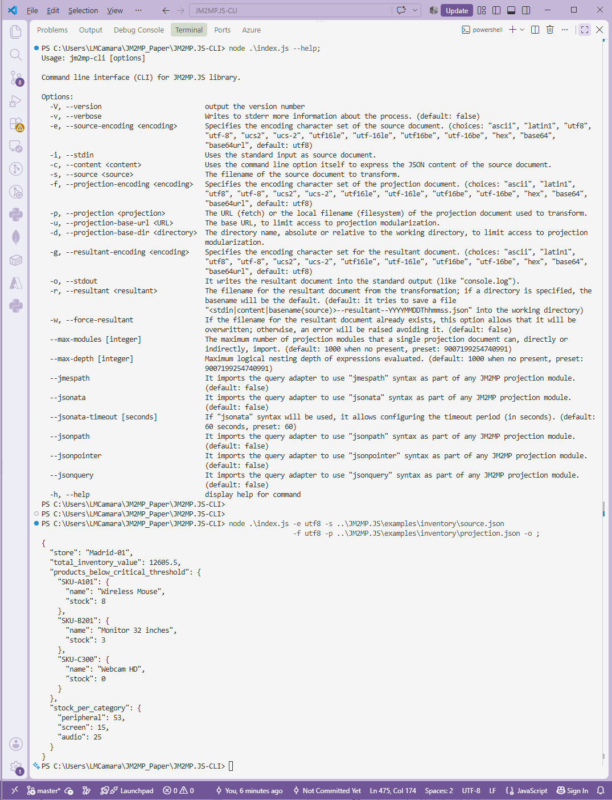

Table of Contents
- Introduction
- Software Architecture and Components
- Options and Arguments
- Version
- Verbose
- Source Encoding
- Source from STDIN
- Source from CLI Argument
- Source from File
- Projection Encoding
- Projection Location
- Projection Base URL (Fetch)
- Projection Base Directory (FileSystem)
- Resultant Encoding
- Resultant to STDOUT
- Resultant to File
- Overwrite Resultant File If Exists
- Maximum Number of Modules
- Maximum Depth of Nesting
- JMESPath
- JSONata
- JSONata TimeOut
- JSONPath
- JSON Pointer
- JSON Query
- Display the Help
- Example of Use
Introduction
The JM2MP.JS-CLI project is a command line interface (CLI) console
application.
It enables the use of JM2MP.JS library an JM2MP format in online
interactive shells , or as part of batch processing scripts.
Software Architecture and Components
The JM2MP.JS-CLI project uses the following library to build its
command line interface:
Installation
To install the project JM2MP.JS-CLI, you can download or clone the
source code from its repository on
GitHub:
git clone "https://github.com/json-mde/jm2mp.js-cli" "jm2mp.js-cli"
To use it in any shell, it is also possible to install this program as a global tool from its NPM package, or just executing it directy from the NPX command:
# Install it as a global tool...
npm install --global @json-mde/jm2mp-cli
# ...or just download and execute it!
npx -- @json-mde/jm2mp-cli --help
Options and Arguments
Execution of the following command line will show the help information about all its options and arguments.
node ./index.js --help
It is mandatory to use one and only one option to specify the source document (stdin, content, or source).
It is mandatory to specify a projection document, that will be loaded using the specified URL of filename; optionally, the corresponding base URL or base directory can also be specified (but not both).
For the resultant document, if no output mechanism is specified
(stdout or resultant) then
by default a new file name--resultant--YYYYMMDDThhmmss.json will be
created at the working directory, where name will be stdin,
content, or basename(file) depending on the specified input
mechanism.
If any of the external query languages will be used (like JMESPath or JSONPath, for instance), you must first install their respective packages. For example, the following command line does this through NPM:
npm install --include=optional
Version
-V--version
It outputs the version number.
Verbose
-v--verbose
Writes to STDERR more information about the process (especially when
errors happened).
By default: false.
Source Encoding
-e--source-encoding <encoding>
It specifies the encoding character set of the source document.
The available choices come from the Node.js platform:
ascii, latin1, utf8, utf-8, ucs2, ucs-2, utf16le,
utf-16le, utf16be, utf-16be, hex, base64, and base64url.
By default: utf8.
Source from STDIN
-i--stdin
It uses the standard input STDIN as the source document.
Source from CLI Argument
-c--content <content>
It uses the command line option argument to express the JSON content of the source document.
Source from File
-s--source <source>
The filename of the source document that will be transformed.
Projection Encoding
-f--projection-encoding <encoding>
It specifies the encoding character set of the projection document.
It offers the same choices as the source encoding option.
By default: utf8.
Projection Location
-p--projection <projection>
The URL (fetch) or the local filename (filesystem) of the projection document that will be used to transform the source.
By default: it tries to use a projection.json file from the working
directory, raising an error if not exists.
Projection Base URL (Fetch)
-u--projection-base-url <URL>
The base URL, to (securize) limit access to projection modularization.
Projection Base Directory (FileSystem)
-d--projection-base-dir <directory>
The directory name, absolute or relative to the working directory, to (securize) limit access to projection modularization.
By default: the working directory.
Resultant Encoding
-g--resultant-encoding <encoding>
It specifies the encoding character set for the resultant document.
It offers the same choices as the source encoding option.
By default: utf8.
Resultant to STDOUT
-o--stdout
It writes the resultant document into the standard output STDOUT
(like console.log).
Resultant to File
-r--resultant <resultant>
The filename for the resultant document from the transformation; if a directory is specified, the name will be the default; if a relative filename is specified, it will be saved into the working directory.
By default: it tries to save into the working directory the file
<stdin|content|basename(source)>--resultant--YYYYMMDDThhmmss.json.
Overwrite Resultant File If Exists
-w--force-resultant
If the filename for the resultant document already exists, this option allows that it will be overwritten; otherwise, an error will be raised avoiding it.
By default: false.
Maximum Number of Modules
--max-modules [integer]
The maximum number of projection modules that a single projection document can, directly or indirectly, import.
By default: 1000. But if the option is present but no number is
specified, then the value will be preset to
Number.MAX_SAFE_INTEGER.
Maximum Depth of Nesting
--max-depth [integer]
The maximum logical nesting depth that JM2MP will evaluated as part of
any projection document.
By default: 1000. But if the option is present but no number is
specified, then the value will be preset to
Number.MAX_SAFE_INTEGER.
JMESPath
--jmespath
It imports the query adapter to use jmespath syntax as part of any
JM2MP projection module.
By default: false.
JSONata
--jsonata
It imports the query adapter to use jsonata syntax as part of any
JM2MP projection module.
By default: false.
JSONata TimeOut
--jsonata-timeout [seconds]
If jsonata syntax will be used, it allows to configure the timeout
period (in seconds) before an error will be raised.
By default: 60; also preset to 60 if option is presented but without
any specified value.
JSONPath
--jsonpath
It imports the query adapter to use jsonpath syntax as part of any
JM2MP projection module.
By default: false.
JSON Pointer
--jsonpointer
It imports the query adapter to use jsonpointer syntax as part of any
JM2MP projection module.
By default: false.
JSON Query
--jsonquery
It imports the query adapter to use jsonquery syntax as part of any
JM2MP projection module.
By default: false.
Display the Help
-
-h, --helpIt displays this help for command.
Example of Use
Next screen capture shows how to project (transform) a JSON document
using JM2MP syntax via this command line utility JM2MP.JS-CLI, which
can be used interactively in any shell or as part of batch processing
using scripts.
You can view this complete example of an inventory in the corresponding tutorial.
